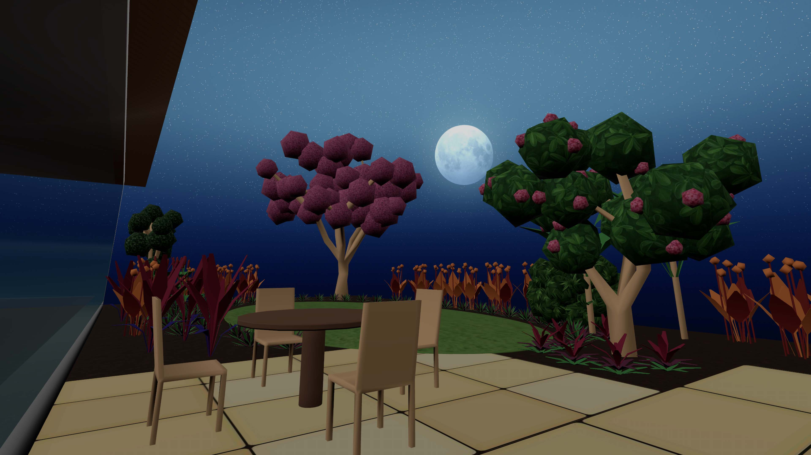

Flourish Garden is proud to announce that we are available for Apple Vision Pro on the App Store, beginning today.
Apple Vision Pro will enable Flourish Garden to take your garden experience to a level you never thought possible. Flourish Garden can help you visualize and design the garden with our interactive 3D application, and by with adding Apple Vision Pro, you will be immersed into an amazing garden experience.
As you stand in the garden you will experience the spatial features like walking through the plants and trees, hearing the birds sing, watching the pollinators buzz around and experiencing the garden at different times of the day, from Sunset to Sunrise.
By experiencing the garden this way, it will enable you to develop a sustainable garden that you can enjoy for years to come.

Flourish Garden was developed to help inspire, design and create the garden of your dreams.
Our mission is to help you learn, create and care for your garden.
As gardens grow, so will Flourish Garden. With regular updates and new features.

Follow us on our journey as we guide you on yours

© PlanningMyGarden Inc. All rights reserved.